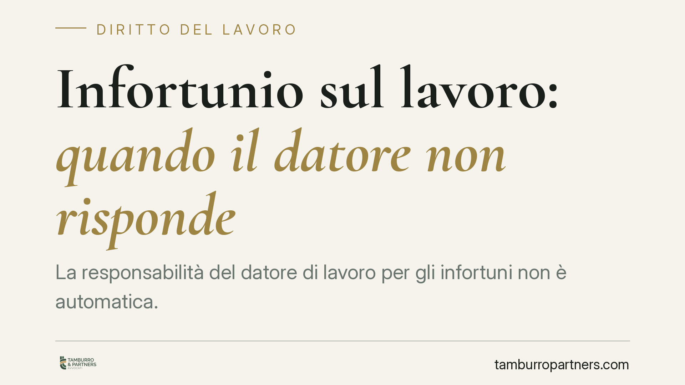

Infortunio sul lavoro: quando il datore non risponde
La responsabilità del datore di lavoro per gli infortuni non è automatica. Il Testo Unico sulla sicurezza e la giurisprudenza della Cassazione tracciano confini precisi: esistono situazioni in cui l'evento dannoso non è imputabile all'azienda, in particolare quando il lavoratore adotta condotte imprevedibili o del tutto estranee alle mansioni assegnate. Vediamo quando scatta l'esonero.

Il fatto
Un tema ricorrente nel contenzioso in materia di sicurezza è il perimetro della responsabilità datoriale. La domanda pratica è semplice: dopo un infortunio, il datore di lavoro risponde sempre? La risposta è no. La Cassazione penale, in una pronuncia del 2013, ha ribadito che l'obbligo di protezione non copre ogni evento, ma trova un limite quando l'incidente deriva da una condotta del lavoratore imprevedibile ed estranea al processo produttivo.
Inquadramento normativo
Il riferimento centrale è il D.Lgs. n. 81/2008 (Testo Unico sulla salute e sicurezza sul lavoro). L'art. 2087 del Codice civile impone al datore di adottare le misure che, secondo la tecnica e l'esperienza, sono necessarie a tutelare l'integrità fisica dei lavoratori. Si tratta di un obbligo ampio, ma non illimitato.
La giurisprudenza distingue tra rischio specifico e rischio eccentrico (o abnorme). Il rischio specifico è quello connaturato all'attività lavorativa: rientra pienamente negli obblighi di prevenzione e formazione del datore. Il rischio abnorme, invece, nasce da un comportamento del lavoratore che esula dalle mansioni assegnate e che nessuna misura di sicurezza ragionevole avrebbe potuto prevenire. In questo secondo caso la Cassazione riconosce l'interruzione del nesso di causalità tra l'omissione datoriale e l'evento.
Il criterio dell'imprevedibilità
Il punto decisivo è l'imprevedibilità della condotta. Non basta che il lavoratore abbia commesso un errore o sia stato imprudente: se la disattenzione rientra nel novero dei comportamenti prevedibili durante l'esecuzione del lavoro, il datore resta responsabile perché avrebbe dovuto predisporre presìdi adeguati.
L'esonero opera solo quando il lavoratore compie un'azione del tutto arbitraria, esorbitante rispetto al procedimento produttivo, che si pone al di fuori di qualsiasi logica aziendale. È il caso classico del dipendente che manomette un dispositivo di sicurezza, opera in un'area interdetta o svolge un'attività che nessuno gli aveva assegnato.
La stessa logica vale per i pericoli occulti non conoscibili dall'azienda con l'ordinaria diligenza: se il rischio non era né noto né riconoscibile, non può fondare un addebito di colpa.
Implicazioni pratiche
Per il datore di lavoro questo non è un lasciapassare. L'onere di dimostrare l'imprevedibilità della condotta grava su chi la invoca, ed è un onere severo. La difesa fondata sul "comportamento anomalo del lavoratore" regge soltanto se l'azienda ha adempiuto integralmente ai propri obblighi: valutazione dei rischi (DVR), formazione documentata, fornitura e manutenzione dei dispositivi di protezione, vigilanza effettiva.
Se manca anche uno solo di questi tasselli, il richiamo al comportamento abnorme del dipendente perde efficacia. La giurisprudenza è costante nel ritenere che la colpa datoriale assorba l'imprudenza del lavoratore quando l'omissione ha creato o agevolato le condizioni dell'infortunio.
Per il lavoratore, di contro, la consapevolezza di questi limiti è utile per valutare la fondatezza di una eventuale richiesta risarcitoria e per documentare tempestivamente le circostanze dell'evento.
Cosa fare in concreto
- Aggiornate il DVR: verificate che il documento di valutazione dei rischi copra tutte le lavorazioni effettive, comprese quelle marginali o saltuarie.
- Documentate la formazione: conservate registri, attestati e verbali di consegna dei dispositivi di protezione individuale. La prova scritta è decisiva in giudizio.
- Presidiate la vigilanza: la sola informativa non basta. Predisponete controlli periodici sul rispetto delle procedure e annotateli.
- Isolate i rischi non standard: interdite fisicamente le aree pericolose e segnalate le operazioni vietate, così da rendere qualsiasi accesso una condotta palesemente abnorme.
- Ricostruite subito i fatti: dopo un infortunio, raccogliete testimonianze e documentazione tecnica prima che le tracce si disperdano.
La linea di confine tra responsabilità ed esonero è sottile e si gioca sulla qualità della prevenzione documentata. Consigliamo di affrontare ogni sinistro con un'analisi puntuale delle circostanze concrete e degli adempimenti effettivamente eseguiti.
---
*Contributo informativo a cura di Tamburro & Partners - Avv. Giuseppe Tamburro. Non costituisce parere legale.*
Ogni storia di lavoro ha i suoi tempi.
Se gestisci HR e vuoi un confronto su contenzioso, ispezioni o licenziamenti, scrivi allo studio. Ti rispondiamo entro un giorno lavorativo.